Britannia, du temps des romains, a donné Britain, nom générique par lequel les insulaires désignent leur pays. La Bretagne de vos vacances, ils l'appellent Brittany. Sinon l'appellation complète pourrait être Royaume Uni de Grande-Bretagne et d'Irlande du Nord (Ulster). Car l'Irlande du Sud (Eire) a conquis son indépendance, non sans mal, en 1922, un exemple que cherche à suivre (une partie de) l'Ecosse actuelle.
Avec les anglais (terme ambigu mais commode dont nous nous contenterons), rien n'est jamais simple, c'est bien connu : si vous n'êtes pas de cet avis et ce n'est qu'un exemple, calculez combien une pinte ou un gallon (UK, pas US !) font, encore actuellement, d'inchs3 (réponses : 34.65 et 277.42 !). Plus concrètement, que pensez-vous d'une voiture parcourant 40 miles par gallon ?
Se pourrait-il que cette dose d'irrationnalité séculaire ait conféré aux anglais un avantage dans l'exercice des arts ? En musique, la réponse est nuancée :
Depuis cent ans, aucun peuple ne s'est davantage cultivé musicalement que le peuple anglais. Rien que le niveau d'exigence de concerts aussi populaires que les Prom's en témoigne à l'évidence.
Les artistes anglais comptent parmi les meilleurs dans beaucoup de domaines de l'interprétation, singulièrement la mélodie (Kathleen Ferrier, Maureen Forrester, Janet Baker, Felicity Lott, Peter Pearce, Anthony Roll Johnsson, Ian Bostridge, Paul Agnew et tant d'autres) et le piano (Rien que l'écurie Hyperion propose une somme étonnante de talents, Howard Shelley, Stephen Hough, Stephen Coombs, Martin Roscoe, Peter Donohoe, Piers Lane, ..., pas de grandes vedettes mais des pianistes indispensables aux répertoires les plus variés). L'éclectisme britannique n'a jamais connu de limite allant jusqu'à révéler Rameau et Berlioz aux mélomanes de l'Hexagone. Quant aux orchestres, aucun pays n'en possède autant de cette qualité, londoniens évidemment mais aussi régionaux (BBC Whales, BBC Scotland, Birmingham, Leeds, Liverpool, Ulster, ...).
Le seul point noir a longtemps été la composition, qui a connu une pénurie aux époques baroque et classique et n'a (re)pris un essor collectif que relativement tardivement, après 1850. Cela est d'autant plus inexplicable que le réservoir des musiques populaires anglaises, galloises, écossaises et irlandaises est non seulement inépuisable mais d'une qualité supérieure comme en témoigne la mode des musiques celtiques. Rien que les CD enregistrés par deux grosses pointures musicales, Andrew Lawrence King (Carolan's Harp, un hommage au barde aveugle, Toirdhealbhach O Cearbhallain (1670-1738), grand compilateur de la tradition irlandaise) et Jordi Savall (Hommage aux traditions irlandaises et écossaises, Volumes I & II), devraient vous mettre l'eau à la bouche par la finesse de leur restitution sonore.
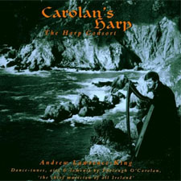
Carolan's Harp
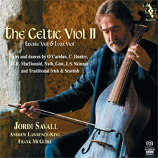
The Celtic Viol II
Lorsque les compositeurs du début du 20ème siècle se sont intéressés à ce patrimoine, se demandant quel parti ils pourraient en tirer, ils l'ont trop souvent fait en restant proches des originaux (William Alwyn : Elizabethan Dances; Malcolm Arnold : Four Scottish Dances; Peter Maxwell-Davies : adorable An Orkney Wedding, With Sunrise) au lieu de réinventer un folklore imaginaire comme cela s'est fait sur le continent.
Au bilan, l'histoire de la musique anglaise ne peut se prévaloir que de trois grosses pointures, appartenant à trois époques bien différentes, baroque, romantique et moderne :
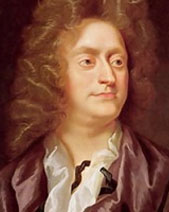
Henry Purcell
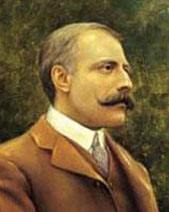
Edward Elgar
Benjamin Britten
Henry Purcell (1659-1695), surnommé en son temps l'Orpheus Britannicus, fut un musicien hyperdoué; hélas il est mort jeune, sans doute de tuberculose. Didon et Enée est son oeuvre scénique la plus souvent jouée mais The Tempest, The fairy Queen, The indian Queen (une oeuvre complétée par les soins de son frère Daniel) ou l'étonnant King Arthur comptent parmi ce que le répertoire baroque compte de plus précieux (Le dernier extrait proposé est le célèbre "Air du Froid" qui a reçu tant d'interprétations si différentes dont celle, arrangée, de l'inclassable Klaus Nomi). Sa musique religieuse, dont une partie fut dédiée à la Reine Mary II, est également de toute beauté; on attend avec impatience l'enregistrement de l'ensemble Vox Luminis, actuellement en tournée dans ce répertoire (en 2015). Sa musique instrumentale, nettement savante, est d'un abord moins immédiat mais elle est essentielle (Sonates en Trio 1 à 12 et superbes Fantaisies pour violes).
Edward Elgar (1857-1934) fut appelé le Brahms anglais et c'est un compliment. Les français, qui eurent déjà beaucoup de mal à digérer (la musique de) l'allemand, au début du 20ème siècle, en eurent bien davantage avec celle de l'anglais, qu'ils assimilèrent un peu rapidement à un Christmas Pudding consommé hors des délais. Par pitié, ne clamez pas en public votre admiration pour Elgar en citant la 1ère marche "Pomp and Circumstance", habile au demeurant : si cela vous échappe, faites au moins remarquer qu'il en existe 4 autres (et même une 6ème inachevée et complétée par Anthony Payne) et que la quatrième propose un intermède miroir de celui de la première. Tant qu'à citer un tube, optez plutôt pour les merveilleuses Variations Enigma ou les superbes Sea Pictures (Janet Baker, évidemment !). Elgar a ressuscité de la plus belle façon l'oratorio handélien : bien interprétés (car à la moindre faute de goût, c'est la cata), The Light of Life, The Kingdom, The Apostles et surtout The Dream of Gerontius exhalent une puissance expressive impressionnante. Mais ce n'est pas tout : les deux symphonies achevées (l'incontournable n°1, la moins aimée n°2, l'inachevée n°3, complétée par Antony Payne), les Concertos pour violon (choisi par Gidon Kremer, en 1967, pour défendre sa place en finale du Concours Reine Elisabeth) et pour violoncelle (défendu et avec quel panache par la regrettée Jacqueline Du Pré) sont des monuments aussi incontournables que l'Abbaye de Westminster. Enfin la Sonate pour violon & piano, le Quintette à clavier et le Quatuor à cordes sont là pour vous rappeler qu'Elgar maîtrisait pareillement le langage intimiste. J'aime la musique d'Elgar comme j'aime celles écrites par Korngold ou Respighi (et d'autres ...) : on s'y promène à l'aise, à l'abri du tourisme musical de masse.
Le grand Monsieur de la musique moderne anglaise fut et demeure Benjamin Britten (1913-1976). Britten est, avec Mozart et Strauss (Richard !), le musicien qui a le mieux écrit pour la voix (rien que cela !). C'est sensible dans ses opéras, de l'épique Peter Grimes à l'intellectuel Turn of the Screw, mais aussi dans ses oeuvres aux dimensions plus modestes et parfaitement ciselées : les célébrissimes Illuminations (d'après Rimbaud), l'à peine moins connue Sérénade pour ténor, cor & cordes ou encore les admirables Canticles (n°2 : Abraham and Isaac). Ses oeuvres symphoniques (Spring Symphony, la Symphonie avec violoncelle, les beaux Concertos pour piano et pour violon, sans oublier le gigantesque War Requiem) sont passionnantes autant que sa musique de chambre (Les 3 Quatuors à cordes (n°3) et les 3 Suites pour violoncelle solo (n°2)). Britten a souvent été égratigné par de sottes et méchantes critiques mais ignorez-les même lorsque c'est Boulez qui les profère car sa musique est promise à l'éternité.
Note. L'homosexualité assumée de Britten lui a valu quelques ennuis dans un pays qui a cultivé une hypocrisie sévère à cet égard, qu'on se souvienne du drame vécu par cet autre génie, Alan Turing (1912-1954). Britten dut sans doute son sort meilleur au fait qu'à l'époque, le prestige musical dépassait de loin le prestige mathématique. Sans compter que Britten avait honoré la commémoration du sacre d'Elisabeth II par la création de l'opéra Gloriana ! Cette oeuvre encore bien trop moderne pour un auditoire de circonstance fut mal accueillie mais la Reine ne lui en tint manifestement pas rigueur, le faisant Lord of Aldeburgh. Cela est heureux car l'opéra est un chef-d'oeuvre.
Trois génies de ce calibre, cela semble fort peu et, de fait, les anglais ont longtemps passé pour être aussi piètres compositeurs que cuisiniers. Cette anomalie de l'histoire, deux événements distants de près de deux siècles l'expliquent en partie, qui ont entravé le développement naturel de la musique anglaise :
En 1362, le "Statute of Pleading", un acte rédigé ... en français (d'Angleterre mais en français quand même !) a imposé l'anglais dans les jugements officiels. Il concrétisait le souhait légitime d'en finir avec la langue de l'envahisseur venu d'Outre-Manche mais il suspendait aussi, d'une certaine façon, l'influence des musiciens français plus que jamais à la pointe du développement musical en Occident.
En 1534, le passage à la foi protestante eut des conséquences encore plus dommageables. Partout en Europe où elle s'est installée avec intransigeance, la Réforme a entravé le développement musical et l'Angleterre, qui boitait déjà de naissance, en a particulièrement souffert. Par bonheur, ni Henry VIII ni tous ses successeurs immédiats n'ont été intraitables avec le rite catholique d'où la nécessité de rappeler un peu d'histoire (de la monarchie) anglaise si l'on veut comprendre les tribulations vécues par les musiciens de ce pays, à la Renaissance.
La fin du Moyen-Age et la Haute Renaissance ou l'histoire d'un bon départ
La cour d'Angleterre s'est francisée sous le règne de Guillaume le Conquérant (1066-1087). Les contacts avec les musiciens franco-flamands qui ont accompagné cette invasion normande promettaient d'être féconds et ils le furent probablement. On n'a malheureusement pas conservé beaucoup de traces des manuscrits d'époque, la plupart ayant été détruits lors du démantèlement des abbayes au moment de la Réforme.
L'un des plus anciens manuscrits parvenus jusqu'à nous, copié vers 1200, est conservé à la Bibliothèque de Cambridge. Il contient une collection de chants monophoniques et polyphoniques en latin (monodies, conduits, ...). Ces pièces, d'auteurs anonymes, ont rencontré un succès immédiat ce qui a produit les premiers tubes anglo-saxons (Summer is icumen in, Abbaye de Reading vers 1240). Un beau CD de l'ensemble Hilliard, paru chez Harmonia Mundi et consacré à de la musique des 14ème et 15ème siècles, vous en propose d'autres, tous aussi entraînants ("Thomas gemma Cantuarie" à ne pas manquer en 10:53). L'ensemble Belladonna a fait tout aussi bien avec l'enregistrement Melodious Melancholye paru chez Raumklang (Ne manquez pas "Miri it is while sumer ilast" en 8:03).
Les premières oeuvres signées sont postérieures à 1400. Deux musiciens, nés à deux décennies de distance, ont laissé espérer que l'école anglaise rivaliserait bientôt avec sa consoeur franco-flamande, sur fond de Guerre de Cent Ans (1337 à 1453) :
Leonel Power (1370-1445) fut l'un des concepteurs de la messe cyclique (basée sur un thème unique et récurrent, ici Alma Redemptoris Mater). Il fut également coauteur principal du Old Hall Manuscript, un autre recueil ayant survécu à la Réforme (Il fut provisoirement sauvé au Collège d'Old Hall Green, d'où son nom, puis racheté par la British Library, en 1973). Interpréter cette musique n'est pas évident : méfiez-vous des ensemble britanniques qui ont tendance à gommer les aspérités pourtant nécessaires. Voici trois échantillons illustrant cette diversité : excellent Gloria, étonnant mais recevable Beata Progenies et impossible Ave Regina coelorum.
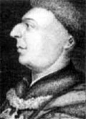
John Dunstable
John Dunstable (1390-1453) fut un autre grand précurseur, qui a clairement anticipé l'art de Guillaume Dufay (1400-1474). Son usage de la contenance angloise, renvoie à un style de polyphonie usant de tierces et de sixtes, alors inusitées sur le continent. Sauf celles consignées dans le Old Hall Manuscript, nombre de ses partitions ont disparu lors de la dissolution des monastères. Quelques copies sont heureusement parvenues à temps sur le continent. Ici encore se pose le problème de l'interprétation : l'ensemble Hilliard fait de son mieux dans cet enregistrement de motets; l'ensemble Tonus Peregrinus chante bien (à l'anglaise) ce Sanctus mais au bilan, je préfère l'approche brute de l'ensemble Pro Cantionae Antiqua, ici dans Beata Mater.
Malgré ce départ prometteur, la génération suivante n'a pas comblé les espérances, ne proposant que des musiciens d'importances moindres (attention toutes les dates mentionnées sont approximatives) : John Plummer (1410-1483), tenté par un Ars Subtilior hélas vidé de sa substance (Anna Mater Matris Christi), John Hothby (1410-1487), Walter Frye (???-1474) (Missa Nobilis et pulchra), Robert Morton (1430-1479), passé à la postérité grâce à son tube "Le souvenir de vous me tue" (merveilleux ensemble Gothic Voices), Gilbert Banester (1445-1487), Walter Lambe (1450-1504) (Magnificat), John Browne (1453-1490) (O Maria Salvatoris Mater), William Cornysh the younger (1468-1523) (Salve Regina, canon profane Ah Robin) et Robert Johnson (1470-1554) ont beau demeurer à l'écoute du continent, on n'entend point d'équivalent à l'art consommé des Dufay, Ockeghem ou autre Josquin.
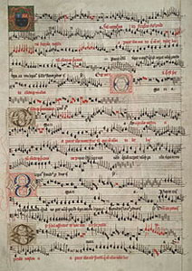
Eton Choirbook
L'Eton Choirbook (vers 1500) est un autre manuscrit de pièces latines ayant également survécu aux excès de la Réforme (Il existe deux autres de moindre importance : les Lambeth Choirbook et Caius Choirbook). Il ne nous est pas parvenu intact pour autant (126 folios sur 224 soit 64 compositions sur les 93 initialement écrites par 24 compositeurs différents dont on connait les noms car la table des matières nous est parvenue). John Browne (1453-1490) (O Maria Salvatoris Mater, Salve Regina I), Richard Davy (1465-1507) (Stabat Mater) et Walter Lambe (Nesciens Mater) y sont les mieux représentés.
L'avènement des Tudor ou l'histoire d'un coup de frein
On fait généralement coïncider la Renaissance anglaise avec les règnes des 5 rois (et reines) Tudor, Henry VII (1485-1509), Henry VIII (1509-1547), Edward VI (1547-1553), Mary I (1553-1558) et Elisabeth I (1558-1603). Seuls Henry VIII et Elisabeth I ont joué un rôle majeur dans des directions d'ailleurs plutôt opposées. La saga des Tudor a suivi un scenario à côté duquel n'importe quel feuilleton à la mode est une romance à l'eau de rose (et encore, je résume, j'édulcore) :
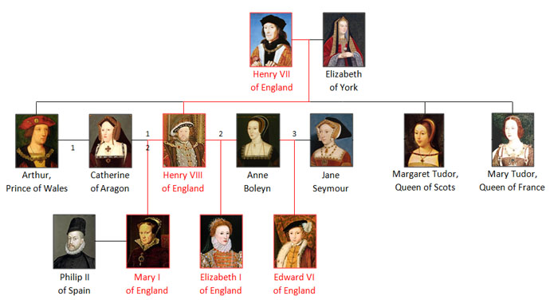
Dynastie Tudor (D'après Wikipedia C C License, Author Wdcf.)
Henry VIII n'était pas premier dans l'ordre de succession de son père, Henry VII. Il le devint à la mort prématurée (16 ans) de son frère, Arthur, dont il épousa la veuve, Catherine d'Aragon, présumée encore vierge. La malédiction biblique s'abattit sur le couple, aucun héritier mâle viable ne venant sceller cette union. En soi, ce n'était nullement une catastrophe puisqu'en Angleterre, le trône était théoriquement accessible aux femmes (bien que cela ne se fut encore jamais produit). Henry prit pourtant ce fait comme prétexte pour répudier Catherine, quitter le giron romain, qui s'opposait à tout divorce, et épouser Anne Boleyn, la soeur de sa maîtresse (!). Anne ne remplit pas mieux sa mission génitrice et soupçonnée d'adultère (quelle audace !), elle périt par décapitation à l'arme blanche avec la bénédiction de son attentionné mari. La troisième épouse, Jane Seymour (et je m'arrête là car il y en eut encore trois autres dont une ététée, Catherine Howard !) lui donna enfin le fils tant attendu, Edward, il n'y en aura d'ailleurs pas d'autre. Les historiens se sont vivement divisés entre le respect pour l'homme cultivé et le dégoût pour le mari, aussi sanguinaire que répugnant (il pesait 178 kg à la fin de sa vie !). On l'a décrit amateur d'art et même fin musicien mais force est de constater rétrospectivement que la rupture avec Rome qu'il a provoquée, en 1532, a handicapé la vie musicale anglaise. A sa décharge, il ne fut pas nécessairement conscient des conséquences artistiques de ses décisions et d'ailleurs, il n'a jamais formellement interdit qu'on continue à écrire et chanter messes et motets latins.
Les souverains qui ont succédé à Henry VIII adoptèrent des attitudes contradictoires envers le catholicisme, oscillant entre la tentative de restauration pure et simple (Mary I, Jacques II) et la coexistence tolérante (Elisabeth I, Charles I, Charles II) parsemée d'épisodes répressifs (Jacques I). Les musiciens prudents adoptèrent les modes d'expression réformés et les autres brouillèrent les pistes en cultivant deux plants dans chaque pot, un anthem anglican cachant un motet latin ou inversement.
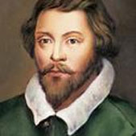
John Taverner
C'est sous le court règne du fils unique d'Henry VIII, Edward VI (1547-1553), en fait de la Régence mise en place vu le jeune âge de celui-ci (9 ans !), qu'une radicalisation protestante s'est mise en place. Thomas Cranmer (1489-1556), Archevêque de Canterbury et grand artisan du schisme anglican, vit la possibilité de substituer son Common Book of Prayers à la messe en latin, chose qu'il n'aurait pas osé imposer du vivant d'Henry VIII. De fait, jusqu'à cette date, la messe catholique continuait de prospérer en Angleterre : Robert Fayrfax (1464-1521) (Missa O Quam Glorifica), John Taverner (1495-1545) (Missa Western Wind), Christopher Tye (1505-1572) (Missa Euge Bone), John Sheppard (1515-1559) (For A Meane, Frences), ont tous prouvé qu'ils avaient parfaitement assimilé les règles du genre. Le meilleur d'entre eux, Taverner, a même innové dans son grand chef-d'oeuvre, la Missa Gloria tibi Trinitas, posant une voix de trebble au-dessus d'une polyphonie déjà bien remplie; notez l'excellente interprétation de l'ensemble danois Ars Nova. On ignore ce qu'a fait Taverner durant les dix dernières années de son existence mais on suppose que rendu prudent il a cessé d'écrire, quelle perte ! Au bilan, une chose est sûre, l'adoption du livre bâtard des Common Prayers a contrarié le développement de la musique anglaise.
Si la répression a d'abord frappé les monastères et leur précieux manuscrits, souvent perdus à jamais, une résistance a existé parmi quelques musiciens courageux qui ont tenté de brouiller les pistes en alternant les rites anglican et latin. A ce jeu, Christopher Tye (1505-1572) (Omnes Gentes), John Sheppard (1515-1558) (In Pace), Robert White (1538-1574) (Lamentatio a 6) et Orlando Gibbons (1583-1625) (Veni Creator ) ont fait oeuvre utile.
Les deux souveraines qui ont succédé à Edward VI ont heureusement, chacune à leur manière, contribué à simplifier la vie des compositeurs de musique :
Mary I (1553-1558) a succédé à Edward VI contre la volonté de son grand-père (Henry VIII n'a vraisemblablement pas pu se retourner dans sa tombe vu son tour de taille estimé à 135 cm !). Elevée par sa mère (Catherine d'Aragon si vous avez suivi), Mary est restée fidèle à sa foi catholique pendant un règne qu'elle a rendu répressif envers les protestants (d'où son surnom peu flatteur de Bloody Mary) et dont Cranmer fit les frais, brûlé vif. Son règne fut cependant de trop courte durée pour inverser la tendance liturgique et rendre aux musiciens une liberté totale d'écriture. Même lorsque William Mundy (1528-1591) a écrit le motet latin Vox Patris Caelestis, il l'a lissé comme un psaume.
Commença alors le long règne (1558-1603) de la demi-soeur de Mary I, Elisabeth I, qui rétablit un protestantisme débarrassé de ses excès. Les musiciens furent à bas mots autorisés à écrire pour tous les cultes et ce d'autant plus facilement qu'ils officiaient loin de la capitale. C'est cette tolérance relative qui a permis à Thomas Tallis (1505-1585) (Missa Puer natus est, Missa a 4 voci) et William Byrd (1540-1623) (Messes à 3 voix, 4 voix, 5 voix) d'écrire de nouvelles messes quitte à écrire pour l'autre culte en fonction de la provenance du vent. Tallis s'est en particulier rendu célèbre par l'écriture de motets dont le fameux, Spem in Alium, à 40 (!) parties. L'interprétation proposée, de l'ensemble Pro Cantione Antiqua, me convainc personnellement davantage que celle des Tallis Scholars, un comble. C'est toutefois dans le domaine profane que les musiciens élisabéthains, devenus prudents, ont fait diversion, virginalistes, luthistes, violistes et madrigalistes.
De l'âge d'or élisabéthain (1558-1603) à la Révolution de 1649
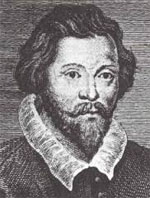
William Byrd
John Dowland
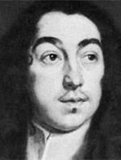
Thomas Tomkins
Anthony Holborne
Plusieurs écoles anglaises ont fleuri pendant le règne d'Elisabeth I, occupant chacune une place enviable dans les histoires de la musique. L'intérêt voire l'émotion qu'on éprouve, lors d'une écoute moderne, dépend de la sensibilité voire de l'humeur instantanée de chacun : subjectivement, je confesse sans trop de honte un certain ennui à l'écoute de la façon dont beaucoup de musiciens anglais ont abordé le clavecin et le luth; en fait ils ont pâti d'avoir abordé trop tôt des genres qui ne pouvaient réellement mûrir qu'après 1640, ne serait-ce que pour des questions de facture instrumentale et de technique interprétative. Je les ai toujours trouvé bien meilleurs à la viole, surtout en Consort, et au chant madrigalesque :
Les virginalistes (Virginal est le nom commun utilisé en Angleterre pour désigner les intruments pourvue d'un clavier actionnant le pincement des cordes : clavecin ou épinette et davantage courte épinette à un seul clavier que grand clavecin à deux claviers). Il ne faut pas attendre de l'école anglaise les trésors de raffinements que l'école française déploiera quelques décennies plus tard : l'instrument anglais est dépourvu d'ambition acoustique, demeurant fonctionnellement au service de l'écriture. Relisez le billet concernant l'école française, réécoutez et comparez avec les quelques pièces qui suivent et vous comprendrez que les français ont vengé la défaite d'Azincourt grâce au clavecin. Ajustons cependant, les oeuvres de William Byrd (1539-1623), figurant dans les Fitzwilliam Virginal Book et My Lady Nevell's Book, sont d'excellentes factures (The Carmans Whistle, The Battle, The Bells). De même, je comprends que le label MDG ait souhaité graver l'oeuvre intégrale deThomas Tomkins (1572-1656) (Volume 3). Soeuvres de John Bull (1562-1628) (Goodnight),Giles Farnaby (1560-1640) (Dream and his Rest), Richard Farnaby (1594-1623) (Nobodyes Gigge),Orlando Gibbons (1583-1625) (Pavan & Gaillard),Thomas Morley (1557-1602) (Fantasia), de plus très souvent desservies par la sonorité d'instruments indigents.
Les luthistes élisabéthains, emmenés à leurs débuts par un immigrant italien, Alfonso Ferrabosco (1543-1588, le père), ne m'ont jamais passionné et je n'en admire que plus l'art de Paul O'Dette, capable de se tenir éveillé en jouant Lachrimae Pavan de John Dowland (1563-1626). Heureusement que cette Gaillard réveille quelque peu. A nouveau, les écoles françaises, Robert de Visée (1655-1732), ou allemande, Johannes Hieronymus Kapsberger (1580-1651) et Silvius Leopold Weiss (1687-1750), plus tardives il est vrai, ont fait beaucoup mieux dans le genre, il faudra que j'y revienne un de ces jours avec plus de détails.
Les violistes ont fait de l'excellent travail, à commencer par l'admirable Anthony Holborne (1545-1602) (The Image of Melancholly). De même, Alfonso Ferrabosco (1575-1628, le fils) (Fantaisie pour 3 violes), Orlando Gibbons (1583-1625) (Fantaisie pour 3 basses de violes), Christopher Tye (1498-1573) (Lawdes Deo) ont été efficaces dans la mise au point du Consort à plusieurs violes, qui mélange plusieurs tessitures d'instruments dans un cadre contrapuntique fantaisiste et/ou savant. L'ensemble Fretwork a popularisé le genre en proposant de nombreux enregistrements de qualité consacrés à William Byrd (1539-1623) et William Lawes (1602-1645) (Consort for 5 & 6). Jordi Savall ne pouvait ignorer ce répertoire et, de fait, il a dédicacé un album à William Brade (1560-1630), un des rares musiciens anglais à s'être expatrié en Allemagne. Savall a également révélé aux amateurs incrédules l'oeuvre de cet autre amateur, le capitaine Tobias Hume (1569-1645), mercenaire au service des armées suédoises et russes dont les pièces figurent dans deux recueils, The first Part of Ayres (ou Musical Humors) and Captain Humes Poetical Musicke.
Les madrigalistes ont déjà été évoqués sur ce site. Pour rappel, le madrigal anglais est la forme spécifique d'un genre né en Italie et qui a prospéré pendant une très courte période de 30 ans, les historiens précisent 1593-1622, soit à cheval sur la fin du règne d'Elisabeth 1ère (Tudor) et le début du règne de Jacques 1er (Stuart). En (re)voici quelques échantillons significatifs : William Byrd (1542-1623) (This sweet and merry month of May), Thomas Morley (1557-1602) (Célèbre Now is the Month of Maying), Peter Philips (1560-1628), John Dowland (1563-1626) (Flow my tears, Come, heavy sleep, Come again, sweet love doth now invite), John Farmer (1565-1605) (Fair Phyllis I saw), Giles Farnaby (1565-1640), Francis Pilkington (1570-1638) (O Softly Singing Lute), John Ward (1571-1638), Thomas Tomkins (1572-1656) (Woe is me for thee, par I Fagiolini, un ensemble au timbre dramatique bienvenu), John Wilbye (1574-1638) (O Wretched Man), John Bennet (1575-1614) (All Creatures Now), Thomas Weelkes (1576-1623) (Death hath deprived me), Orlando Gibbons (1583-1625) (The Silver Swan), Thomas Ravenscroft (1592-1633) (The Three Ravens) et Robert Jones (1597-1615) (Farewell, Dear Love).
La proximité du théâtre de Shakespeare (1564-1616) a inspiré aux musiciens un accompagnement musical pour des scènes significatives, c'est la mode du Mask. L'Oberon de Benjamin Jonson (1572-1637), daté de 1611, est un des premiers essais réussis d'un genre qui continuera de prospérer jusqu'à la fin du siècle. The Tempest détient sans doute le record des mises en musique, les plus fameuses étant celles de Locke et de Purcell.
Sur un mode plus léger, Thomas Weelkes (1576-1623), Orlando Gibbons (1583-1625) et Thomas Ravenscroft (1592-1633) ont contribué à la mode des Cries of London, sortes de jeux vocaux en imitations que Clément Jannequin (1485-1558) avait déjà popularisé en France un siècle plus tôt (Les Cris de Paris).
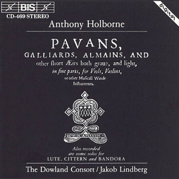
Anthony Holborne
L'île déserte. Si je devais me limiter à un seul enregistrement de musique élisabéthaine, j'opterais peut-être (en ce moment !) pour un CD intitulé "Pavans, Gaillards, ..." d'Holborne. Noble et mélancolique sans être triste, cette musique console en même temps qu'elle garde espoir, ce n'était pas si fréquent en ces temps troublés qu'on a souvent fait passer pour un âge d'or.
Pensez à remercier la maison d'édition BIS qui vous permet une écoute gratuite en toute légalité.
Si vous êtes restés attentifs aux dates, vous aurez noté que les oeuvres précédentes, essentiellement profanes, débordaient éventuellement du règne d'Elisabeth I. Sans descendance, la Reine Vierge a laissé la couronne à un très lointain cousin (au 6ème degré !) Stuart, Jacques VI d'Ecosse (1603-1625), qui réunit de ce fait les 3 couronnes (Angleterre, Irlande et Ecosse) sous le nom de Jacques I. Initialement tolérant envers les catholiques, il durcit sa position en répression à la Conspiration des Poudres de 1605, au point que seuls quelques musiciens doués pour l'équilibrisme se risquèrent encore à écrire pour le culte latin. Il ne faut pas chercher plus loin les raisons de l'essor des musiques profanes, naturellement moins risquées.
La tendance s'inversa pourtant quelque peu sous le règne de son fils, Charles I (1625-1649), du fait de son mariage avec la très catholique princesse française, Henriette Marie, fille d'Henri IV et de Marie de Médicis : elle tenta d'influencer l'ouverture aux catholiques de son royal époux.
Note. Tant qu'on baigne dans l'histoire anglaise, comment ne pas évoquer l'épisode tragique de la République de Cromwell ? Ceux qui pensent que la contestation de la monarchie de droit divin fut une invention française se trompent lourdement : en 1649, les anglais ont fait "leur" Révolution dont les détails anticipent curieusement ceux de la Révolution française, avec 140 ans d'avance ! Contesté sur plusieurs fronts, Charles I réagit mal : il se mit à dos le Parlement et le peuple, qui détestait sa Reine, étrangère et catholique. Cela rappelle Louis XVI et Marie-Antoinette pour un résultat à peu près identique, la décapitation royale (Henriette Marie y échappa en se réfugiant en France). Le nouvel homme fort, Olivier Cromwell, instaura la République mais contrairement à Bonaparte, il renonça à se faire couronner malgré l'insistance du Parlement. Cette République s'éteint quasiment avec Cromwell : son Aiglon de fils, Richard Cromwell, ne tint la succession que quelques mois à peine puis il s'enfuit en France pour éviter les conséquences d'une Restauration imminente et provisoirement définitive.
La Restauration (1660)
Charles II (1660-1685), fils de Charles I, monta sur le trône et s'empressa de venger la tête de son père en faisant décapiter post-mortem les dépouilles de ses bourreaux, ah ces anglais avaient déjà le sens de l'humeur ! Plus sérieusement, Charles II recréa les emplois de la Chapelle Royale, dissoute suite aux excès de la Révolution, et il entreprit de mettre en place une vie musicale dans la société civile (salles de concert publiques et privées, développement de l'édition, ...). Les musiciens reprirent leur service à la cour, John Jenkins (1592-1678) essentiellement en musique instrumentale (Fantasia a 6) et Matthew Locke (1621-1677) dans tous les genres en usage, instrumental (Suites n°1 & 2) et vocal (How Doth the City Sit Solitary). L'autre musicien important de cette époque fut John Blow (1649-1708) qui a également couvert tous les genres : Venus et Adonis, une fable d'après l'oeuvre poétique de Shakespeare, Chaconne pour clavecin et l'Ode sur la Mort de Purcell, notre façon de prendre congé du baroque musical anglais.
Note. Prenons également congé de la famille royale qui n'en avait pas encore fini avec ses hésitations : Charles II, protestant (bien que fils de la catholique Henriette Marie si vous suivez), règna 25 ans et fut remplacé par son frère, Jacques II, catholique (si vous suivez réellement, vous êtes très fort) et de ce fait éphémère. Ce dernier ne règna effectivement que 3 ans puis il fut déposé par sa fille aînée, Mary II (élevée dans la foi ... protestante), avec la complicité de son mari Guillaume III d'Orange. Renoncez à suivre et retenez qu'en musique, ce fut le début des vaches maigres.
La traversée du désert
Au niveau d'excellence, Henry Purcell paraît bien isolé dans le paysage musical baroque insulaire. Soyons précis, la vie musicale londonienne n'a jamais été pauvre, c'est la composition autochtone qui a fait défaut. A partir des années 1700, l'Angleterre a rechigné à investir la création musicale, comme si elle doutait de sa capacité à y parvenir. Plusieurs faits en témoignent :
Les anglais ont plus souvent qu'à leur tour compté sur le talent de musiciens importés, allant jusqu'à leur confier le soin de leur forger un art national. Le grand Georg Frederic Ha(e)ndel (1685-1759), pur saxon passé maître dans l'opéra baroque à l'italienne, s'est vu contraint à une reconversion stylistique, à partir de 1735, sous peine de chomage technique : il leur a conçu une recette d'oratorio à une sauce anglaise de sa préparation (Au total deux douzaines d'oeuvres géniales et pas seulement le Messie !). Ses hôtes, aussi admiratifs que reconnaissants, adoptèrent la forme au point qu'ils continueront d'écrire des oratorios un siècle et demi plus tard (Edward Elgar, William Walton, Michael Tippett, ... ), alors que la mode était passée depuis longtemps sur le continent.
Même l'harmonisation du répertoire populaire local a posé problème. N'est-ce déjà pas un immigré allemand, Johann Christoph Pepusch (1667-1752), qui a mis en musique le savoureux Opéra des Gueux (Beggar's Opera), sorte de pasticcio anglais confectionné sur un livret de John Gay et sur base d'arrangements d'airs populaires à la mode (Greensleeves). L'enregistrement de Jeremy Barlow est de loin le meilleur, faites seulement attention que la version Harmonia Mundi est très incomplète ce qui est moins le cas de la version Hyperion. L'oeuvre a tellement bien traversé les âges que Britten en a réinstrumenté les parties au goût de son temps mais, pour ma part, je reste fidèle à l'original.
50 ans après Haendel, ce fut au tour de Joseph Haydn (1732-1809) de répondre à l'invitation de l'éditeur Johann Peter Salomon (1745-1815), lui même immigré allemand. Haydn eut beau impressionner par ses créations londoniennes (en particulier les 12 symphonies du même nom, n° 93 à 104), il ne fit pas vraiment école au niveau espéré. C'est encore Haydn que les éditeurs George Thomson (1757-1851), William Whyte (1771-1858) et William Napier (1740-1812) ont sollicité pour arranger et instrumenter un grand nombre de leurs classiques populaires (plus de 600 !) (Scottish songs Vol I, Welsh songs David of the white rock). Le même Thomson a d'ailleurs réitéré la commande auprès de Beethoven (1770-1827) (Welsh songs, Scottish songs, Irish songs), qui l'honora d'autant plus volontiers qu'il était en panne sévère d'inspiration à cette époque (1815-1817).
Est-ce à dire qu'il ne se trouvait plus personne à Londres capable d'écrire de la bonne musique, particulièrement au baroque tardif ? Si l'on entend par là l'expression d'un art exigeant qui repousse sans cesse ses limites, alors la réponse est probablement affirmative. Par contre, si l'on se satisfait du savoir-faire d'artisans consciencieux, alors on peut toujours faire des rencontres agréables : William Turner (1651-1740), William Williams (1655-1701) (Sonate en Trio, opus 1-6), Daniel Purcell (1664-1717) (Sonates), John Eccles (1668-1735) (Europe Revells In Ye Peace), William Croft (1678-1727) (Belle Suite en do mineur), William Corbett (1680-1748) (Sonate en mi), Robert Woodcock (1690-1728) (Concerto en mi mineur), ..., ont écrit des musiques plaisantes ou parfois ... insipides. Une spécialité anglaise a quand même vu le jour, où la trompette dialogue avec l'orgue ou les cordes : Jeremiah Clarke (1674-1707) est passé à la postérité grâce à un Voluntary qui accompagne avec éclat les noces les plus festives (Charles & Diana, par exemple !).
L'âge classique
Le constat que l'on peut dresser à l'époque classique n'est guère plus réjouissant qu'à la période baroque : beaucoup de musiques agréables dont peu s'avèrent transcendantes. Demeurons prudent cependant car des découvertes ponctuelles demeurent possibles, tel l'oratorio, The Seasons, de John Christopher Smith (1712-1795), un musicien qui mériterait qu'on s'intéresse davantage à lui.
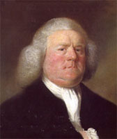
Portrait William Boyce
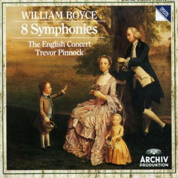
William Boyce : 8 Symphonies
La surdité croissante de William Boyce (1711-1779) ne l'a nullement empêché de briller dans la pénombre régnante. Régalez-vous de ses 8 Symphonies, jouées par l'English Concert (Vous ne trouverez pas de meilleure interprétation), ou de ses 12 Ouvertures (n°4). Ne négligez pas ses 15 Sonates en Trio et convenez que Boyce fait partie de ces musiciens dont on se demande, après coup, ce qui lui a manqué pour être invité à la table des grands.
Ses contemporains ne firent pas vraiment le poids, apparemment incapables d'exploiter les leçons de Joseph Haydn. Je vous les livre en vrac chronologique d'où il vous appartient de les ordonner selon votre échelle de valeur, une rude tâche : Charles Avison (1709-1770) (12 Concerti grossi, d'après Domenico Scarlatti), Thomas Arne (1710-1778) (Rule Britannia c'est lui, heureusement il n'a pas écrit que cela ! : Concerto en sol mineur, pour clavecin), John Stanley (1712-1786) (Concerto en sol majeur, pour cordes), Richard Mudge (1718-1763) (6 Concerti a 7), John Garth (1722-1810) (Concerto opus 1-1, pour violoncelle), Thomas Linley the elder (1733-1795) (Concerto, pour violon en fa majeur), ... .
La génération suivante n'a pas non plus révolutionné l'histoire de la musique. John Marsh (1752-1828) est cependant à l'aise dans cette amusante Conversation symphonique, pour deux orchestres, et dans ses Symphonies (n°6 & n°7). Thomas Linley the younger (1756-1778) (The Tempest, Concerto en fa majeur pour violon), Stephen Storace (1762-1796) (belle et fluide Sonate n°4, Trios à clavier), mon préféré, et Samuel Wesley (1766-1837) (Symphonies en mi bémol majeur, si bémol majeur) complètent ce tableau en demi-teintes. Au fait, John Stafford Smith (1750-1836) ne fait pas partie des musiciens les plus talentueux de son époque mais la petite comme la grande histoire se souviennent qu'il a écrit The Anacreon Song qui deviendra bientôt ... l'Hymne américain !
Le romantisme
Les musiciens anglais n'ont pas brillé aux époques baroque et classique, on espérait mieux des représentants d'une si grande nation. Ils ont progressivement comblé leur retard pendant l'ère romantique, à partir de 1875. Ce réveil de la conscience (musicale) britannique ne fut peut-être pas précoce, mais il fut intense. Un tri s'impose à ce stade qu'on espère assez large pour que le lecteur se forge une opinion personnelle. La tentative du genre qui suit est on ne peut plus périlleuse, le risque étant d'oublier quelques artistes de valeur, mais une chose est sûre, la courbe d'intérêt est nettement ascendante.
L'irlandais John Field (1782-1837) figure à part en tête de cet inventaire car il a passé une bonne partie de sa courte existence sur le continent, surtout en Russie. Ses Nocturnes l'ont rendu célèbre, qui préfigurent l'art de Chopin. Plus ambitieux mais moins convaincants, ses 7 concertos pour piano respirent l'air du temps (n°6).
En Grande-Bretagne, Philip Cipriani Potter (1792-1871) fut un précurseur avec ses 10 symphonies. Potter n'est pas totalement un inconnu : il a définitivement donné son nom au Stradivarius en sa possession et la chronique a conservé la relation de sa visite à Beethoven (1817), un musicien qu'il vénérait, sans que cela transparaisse à l'écoute de ses symphonies (n°3, n°6, n°9).
La génération suivante a poursuivi la quête de la grande forme symphonique : George Alexander Macfarren (1813-1887) (Symphonies n°4 et n°7), William Sterndale Bennett (1816-1875) (Symphonie n°5, Concertos pour piano n°3, n°5) et Charles Litolff (1818-1891) (Concerto symphonique n°4, dont le scherzo est resté célèbre, Concerto symphonique n°3).
Arthur Sullivan (1842-1900) fut à l'Angleterre ce qu'Offenbach fut à la France (ou Johann Strauss à l'Autriche), le roi de l'opérette (The Mikado), qu'il conçut dans le cadre d'une collaboration mémorable avec le librettiste William Gilbert. Précisons que 5 années d'études passées à Leipzig lui ont conféré un réel bagage technique et de fait, sa Symphonie irlandaise en vaut bien une autre.
Dès cette époque et jusqu'à nos jours, les compositeurs se sont enfin bousculés au portillon. La première génération est dominée par les personnalités de Hubert Parry (1848-1918), Charles Villiers Stanford (1852-1924) et Edward Elgar (1857-1934). Avec Parry (Symphonies n°1, n°2, n°3, il y en a 5) et Villiers Stanford (Symphonies n°4, n°5, n°6, il y en a 7), la symphonie britannique a pris son envol définitif, animée par un souffle généreux au service d'une inspiration rarement défaillante. Le géant Elgar vous a été présenté en introduction tandis que Frederic Cowen (1852-1935) (Symphonie n°3) s'est situé un peu en retrait.
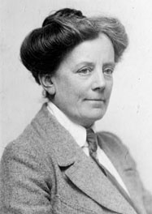
Ethel Smyth
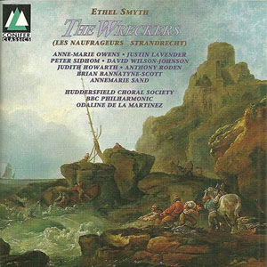
The Wreckers
Deux dames se sont illustrées à peu près à la même époque : si Alice Mary Smith (1839-1884) s'est timidement posée, dans son pays, comme la première dame symphoniste (Symphonie en ut mineur), Ethel Smyth (1858-1944), par ailleurs féministe militante, s'est imposée comme l'égale de ces messieurs dans des oeuvres d'une réelle ampleur (Messe en ré, Concerto pour cor & violon, Quatuor en mi mineur) et par-dessus tout dans son chef-d'oeuvre, le remarquable et par moments wagnérien opéra "The Wreckers" (Ouverture, Act II, Scène 2, Act II, Scène 3).
Les histoires de la musique anglaise insistent à juste titre sur les musiciens qui incarnent à leurs yeux le meilleur de la production insulaire :
Frederick Delius (1862-1934) était à peine anglais : son père, originaire de Hollande (mais né en Allemagne, Frederick fut formé à Leipzig), le destinait aux affaires en Suède, en Floride et enfin en France où il finit par s'installer ! Sa musique constamment rêveuse (Sea Drift, Walk to the Paradise Garden, Requiem, Concerto en ut mineur pour piano) risque de vous bercer jusqu'à l'endormissement si vous ne demeurez pas attentifs, ce qui serait dommage.
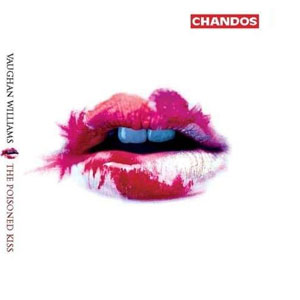
Vaughan Williams : The Kiss
Ralph Vaughan Williams (1872-1958), dont certaines oeuvres peuvent s'avérer indigestes, est célèbre pour quelques pages universellement appréciées (Fantaisie sur un thème de Thomas Tallis, Fantaisie sur Greensleeves, The Lark ascending), toutes pièces dont la légèreté contraste précisément avec la relative lourdeur des 9 Symphonies (London, Pastoral ou Antartica). Tout le monde n'est pas de cet avis et il en est qui tiennent l'énorme Sea Symphony pour un chef-d'oeuvre considérable. Vaughan-Williams m'apparaît particulièrement convaincant dans les oeuvres d'une durée maîtrisée (In the Fen Country, Norfolk Rhapsody n°1, Messe en sol mineur) mais aussi dans ses ouvrages lyriques, d'une légèreté inattendue : The Wasps (Les Guèpes, d'après Aristophane) ou l'extravagante pochade The Poisoned Kiss, dont je ne peux hélas provisoirement vous proposer qu'un trop court extrait.
Tout le monde connaît Gustav Holst (1874-1934), du moins Les Planètes (va pour Karajan qui est ici dans son élément), l'oeuvre qui l'a rendu célèbre et aucune autre d'ailleurs. Il est étrange pour ne pas dire mystérieux qu'il faille faire de véritables fouilles pour mettre à jour d'autres chefs-d'oeuvre alors qu'il n'en manque pas. Peut-être pas la Symphonie, opus 8, mais plutôt la néo-classique Fugal Ouverture, opus 40-1, les formidables Choral Hymns from the Rig Veda, opus 26 (Holst était faciné par la mythologie indoue : ne manquez pas l'épisode "To Agni" en 7:03, ni d'ailleurs les autres !) ou l'opéra de chambre The wandering Scholar, l'une de ses dernières oeuvres. Un musicien à explorer.
Frank Bridge (1879-1941) fut respecté pour le sérieux qu'il mit en chaque oeuvre. Sa Sonate pour violoncelle & piano ou son Quintette à clavier, ici adapté par un excellent ensemble coréen, ne sont certes pas les oeuvres d'un joyeux drille mais elle sont irréprochables par la qualité de leur développement. Ses oeuvres pour orchestre se situent dans le même registre intimiste (Mid of the Night).
John Foulds (1880-1939) a fait l'objet d'une chronique antérieure, rappelez-vous son son World
Requiem ou Dynamic Tritptych , je n'insiste pas.
Avec Arnold Bax (1883-1953), on se rapproche de la modernité sans cependant l'investir vraiment. Son catalogue symphonique couvre tous les genres dont 7 Symphonies d'excellente facture (n°3, n°6, n°7), 18 Poèmes symphoniques (Spring Fire, November Woods, From Dusk Till Dawn), sans doute ce qu'il a écrit de mieux, et quantité d'oeuvres de circonstances. Son catalogue chambriste n'est pas moins complet : superbe Quintette à clavier, Quatuor à cordes n°2. Un musicien trop peu connu qui vaut l'effort de la découverte.
York Bowen (1884-1961) a incarné le romantisme à tout crin d'une majorité de compositeurs anglais peu pressés de suivre le continent dans ses explorations avant-gardistes. C'est un musicien sérieux qui a touché au genre symphonique (Symphonie n°1, Symphonie n°2) mais n'a vraiment excellé qu'au piano, son instrument de prédilection. J'ai évoqué par ailleurs ses 6 excellentes sonates (Sonate n°5) parues chez Hyperion. Etrangement, bien que pianiste professionnel, il n'a pas écrit de Concerto pour son instrument mais bien pour violon et pour alto !
Arthur Bliss (1891-1975) mérite d'autant plus votre considération qu'il a souffert d'incompréhension toute sa vie. Même son mentor Elgar, qui encourageait pourtant ses débuts, ne comprit pas la première note des oeuvres qu'il lui demandait d'écrire (A Colour Symphony, désolé je n'ai pas trouvé d'interprétation meilleure). Ses deux oeuvres les plus ambitieuses, l'opéra The Olympians et la cante Les Béatitudes, n'obtinrent pas le succès escompté. N'ayant pu pu trouver d'illustration, je compense avec les ballets, The Lady of the Shalott et Checkmate, et son Concerto pour violoncelle, dédié à Mstislav Rostropovich. Ecoutez encore son Quatuor en la majeur et Meditation sur un thème de John Blow.
Vous aurez noté - et ce n'est pas fini ! - qu'une histoire d'amour était née entre les compositeurs anglais et la symphonie à une époque où il devenait de bon ton de bouder le genre sur le continent. Le plus étonnant fut l'ampleur du phénomène, qui se répandit auprès de musiciens largement inconnus du public. Tous se sont mis à écrire des symphonies dans un idiome on ne peut plus traditionnel comme si le "Prélude à l'après-midi d'un Faune" (Debussy, 1894) ou "Le Sacre du Printemps" (Stravinsky, 1913) n'avaient jamais existé. Qu'importe puisqu'elles sont souvent d'excellente facture et qu'on ne s'en lasse pas ! En voici en vrac, servez-vous, elles ont été écrites par : Edward German (1862-1936) (Symphonie n°2), Granville Bantock (1868-1946) (Symphonies Les Hébrides, Celtique), John Blackwood McEwen (1868-1948) (Symphonie Solway), Henry Walford Davies (1869-1941) (Symphonie n°2), Donald Francis Tovey (1875-1940) (Symphonie en ré majeur), Joseph Holbrooke (1878-1958) (Symphonie n°4), Hamilton Harty (1879-1941) (Irish Symphony), Cyril Scott (1879-1970) (Symphonie n°1), Edgar Bainton (1880-1956) (Symphonie n°3) et Ernest John Moeran (1894-1950) (Symphonie en sol mineur).
Enfin comment ne pas dédicacer un paragraphe à Havergal (William était son vrai prénom) Brian (1876-1972), le musicien catalogué de tous les excès. Il est connu (lui pas sa musique !) pour avoir écrit 32 symphonies dont 14 dans sa 8ème décennie et 7 dans la 9ème (Symphonie n°31) ! Il eut d'autant plus de mérite de persévérer qu'avec le temps, il ne se trouvait plus grand monde pour l'écouter; il faut dire que sa Symphonie n°1 durait presque 2 heures ! Cette réputation d'extravagance lui a un peu collé à la peau alors que les oeuvres ultérieures étaient d'une durée beaucoup plus raisonnable. Le label Naxos réédite actuellement les enregistrements anciennement parus chez Marco Polo et une promenade sur la toile à partir d'ici (Symphonie n°15) pourrait vous intéresser.
Parmi les rares personnalités qui ne furent pas tentés par l'écriture d'une symphonie, John Ireland (1879-1962) fut anodin (Concerto pour piano) quand George Dyson (1883-1964) se révéla plein de fantaisie (At the Tabard Inn Overture). On regrettera la disparition prématurée (ah cette guerre !) de George Butterworth (1885-1916) (A Shropshire Lad) et on écoutera avec attention Ernest Farrar (1885-1918) (Belle Elégie héroïque), Rebecca Clarke (1886-1979) (Dumka pour trio à clavier) et Herbert Howells (1892-1983) (Superbe Requiem).
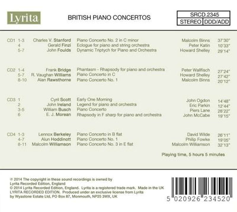
British Piano Concertos
Pour fixer ce répertoire, je vous ai trouvé un album intéressant de 4 CD qui ne vous ruinera pas (20 euros) tout en vous dressant un panorama d'oeuvres de seconds calibres pour piano & orchestre: on y retrouve à leur avantage quelques-uns des musiciens évoqués.
Il est dans l'esprit de ces chroniques d'insister sur l'apport des nations à l'art musical récent. Or c'est précisément le domaine où l'Angleterre a excellé, rattrappant son retard historique puis se positionnant à la pointe de la création contemporaine.
L'ère moderne
Une étoile triple et un cortège de planètes, voilà ce que nous propose le ciel musical anglais à l'aube du 20ème siècle.
Si Britten, mentionné en entrée, occupa incontestablement la première place, le moment est venu d'évoquer deux accessits :
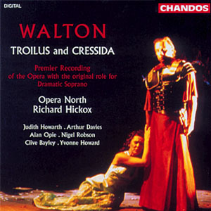
William Walton
William Walton (1902-1983) est un musicien que trop peu de mélomanes prennent la peine d'écouter et pourtant rien que son opéra Troilus et Cressida se positionne parmi les meilleures oeuvres du genre écrites au 20ème siècle. Richard Hickox l'a enregistré pour Chandos et le résultat est sensationnel. Si vous n'êtes pas branchés opéra, vous n'aurez aucune peine à trouver votre bonheur dans l'oeuvre symphonique de ce musicien on ne peut plus traditionnel mais jamais décalé (Symphonies n°1 et n°2, Concertos pour violon, pour violoncelle). Dans le registre intimiste, voici son Quatuor n°2.
Michael Tippett (1905-1998) fut plus aventureux en modernité ce qui lui a valu davantage d'estime de la part des critiques que du public frileux. Son oeuvre la plus célèbre, l'oratorio A Child of our Time, demeure pourtant de coupe classique mais il en va autrement des 4 Symphonies (n°3, n°4) qui ne plairont pas à tout le monde. Dans ce cas, dirigez-vous vers des partitions plus faciles, tels ce néo-classique Concerto pour deux orchestres à cordes voire le Concerto pour piano. Faites-vous également plaisir avec ces Fantaisies sur un thème de Haendel ou de Corelli (à ne pas manquer). L'opéra "The Midsummer Marriage" est remarquable mais sa longueur (3 heures ! : Part 1, Part 2) pourrait en décourager plus d'un, ce qui serait dommage. Rayon chambriste, vous ne pouvez ignorer les 4 Sonates pour piano (n°1, n°2, n°3) ni les 4 Quatuors à cordes (n°1, n°2, n°3, n°4).
Je rappelle enfin les excellents Gerald Finzi (1901-1956), William Alwyn (1905-1985) et Malcolm Arnold (1921-2006) dont l'oeuvre a été considérée sur ce site.
Tous les autres, incroyablement nombreux, exigent un tri, autant dire que je vais faire des mécontents surtout que je commence arbitrairement par deux coups de coeur personnels :
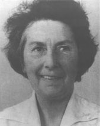
Grace Mary Williams
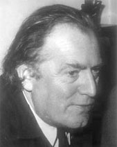
Richard Arnell
Précipitez-vous sur l'oeuvre de la galloise Grace Mary Williams (1906-1977), du moins sur celle que vous parviendrez à dénicher (Penillion, Sea Sketches, Symphonie n°1). Son écriture pour la voix est absolument remarquable (Suite "The Dancers"
Richard Arnell (1917-2009) fait partie des musiciens déjà oubliés alors que Thomas Beecham le considérait comme le meilleur orchestrateur depuis Berlioz (il ne semblait pas connaître Ravel !). Surtout connu pour des collaborations avec les chorégraphes George Balanchine, John Cranko et Frederick Ashton, il semble n'avoir jamais vraiment été pris au sérieux par les critiques britanniques malgré le support actif de chefs prestigieux (Thomas Beecham, Leopold Stokowski et plus récemment Martin Yates qui a complété et enregistré sa 7ème symphonie, dédiée à Nelson Mandela). Son Concerto pour piano, opus 44, est remarquable tout comme ses 6 Symphonies achevées (n°4 , n°5), malgré le fait évident qu'elles ont été coulées dans un moule identique. Un CD reprenant les 5 Quatuors à cordes confirme que l'absence de reconnaissance de ce musicien demeure une énigme.
Toujours aussi respectueux des formes établies, les musiciens britanniques ont cultivé, pendant tout le 20ème siècle, les deux grandes formes traditionnelles, la symphonie et le quatuor à cordes. On distingue les symphonistes militants, qui ont conçu des cycles cohérents dans la durée, de ceux pour qui la symphonie ne fut qu'un moyen d'expression particulier :
Benjamin Frankel
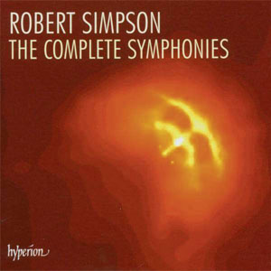
Robert Simpson
Dans la première catégorie on épinglera les précieux cycles composés par Edmund Rubbra (1901-1986) (11 oeuvres d'un néo-romantisme imperturbable : n°6, n°11), William Alwyn (1905-1985) (5 : n°1, n°2, n°3, n°4), Benjamin Frankel (1906-1973) (8 : n°3, n°8), George Lloyd (1913-1998) (12 : Symphonie n°7), Malcolm Arnold (1921-2006) (9 : n°1, n°3, n°6, n°7) et Robert Simpson (1921-1997) (11 : Symphonies n°3, n°5). Ayant présenté Alwyn et Arnold antérieurement, j'attire particulièrement votre attention sur les recueils de Frankel et Simpson. La musique de film a occupé une place tellement importante dans la vie de Frankel qu'on en a presque oublié de le prendre au sérieux lorsqu'il s'est réellement attelé à la composition d'oeuvres savantes. Le massif des 8 symphonies, enregistrées chez CPO, est particulier dans la mesure où le compositeur l'a voulu dans la mouvance schoenbergienne, ne fuyez pas, vous manqueriez l'essentiel ! La 1ère symphonie est la plus stricte des 8, chaque mouvement reposant sur une série de 12 sons, mais elles sont énoncées dans un ordre tellement habile que vous ne vous apercevrez de rien. Les oeuvres suivantes ont progressivement réintégré un diatonisme plus sécurisant. Les symphonies de Simpson, clairement héritées de l'univers du danois, Carl Nielsen (1865-1931), réclament également toute votre attention, elles ont été enregistrées chez Hyperion.
Complétons par quelques artistes isolés que je ne sais où caser, Walter Leigh (1905-1942) (Concerto pour clavecin), Constant Lambert (1905-1951) (Concerto pour piano & 9 instruments) et William Lloyd Webber (1914-1982) (Aurora). Comme Sibelius, ce dernier a cessé d'écrire lorsqu'il se rendit compte du décalage de sa musique par rapport au modernisme ambiant; son fils, Andrew, ne s'est pas posé tant de question, surfant sur la vague légère de la Comédie musicale à succès (Cats, Phantom of the Opera, ...) mais s'essayant parfois à une écriture plus sérieuse, tel ce Requiem, créé par Placido Domingo, Sarah Brightman et Lorin Maazel).
Comme la symphonie, le quatuor à cordes a connu de beaux développements en Angleterre, soit épisodiquement :
Edmund Rubbra (1901-1986) (Quatuor n°2), Alan Rawsthorne (1905-1971) (Quatuor n°1), Michael Tippett (1905-1998) (Quatuor n°4), Benjamin Frankel (1906-1973), Benjamin Britten (1913-1976) (Quatuor n°3), Doreen Carwithen (1922-2003) (Quatuor n°1), Ben Johnston (1926- ) (Quatuor n°6), John Joubert (1927- ) (Quatuor n°2), Hugh Wood (1932- ) (Quatuor n°3), Alexander Goehr (1932- ), Jonathan Harvey (1939-2012) (Quatuor n°3),
soit dans le cadre d'une production à grande échelle : Elizabeth Maconchy (1907-1994) (14 : n°11), Elizabeth Luytens (1906-1983) (14 : n°6), Robert Simpson (1921-1997) (16 : n°8 à écouter), Peter Maxwell Davies (1934- ) (14), Michael Finissy (1946- ) (8 : n°2), David Matthews (1943- ) (11).
Quelques-uns des artistes cités reparaîtront dans la section suivante, consacrée à la musique contemporaine.
La musique d'aujourd'hui
Au terme de la deuxième guerre mondiale, la musique savante a éclaté en diverses tendances contradictoires, en Grande-Bretagne comme ailleurs dans le monde. Le premier réflexe a partout été de l'intellectualiser afin de lui ôter tout caractère hédoniste, jugé déplacé en ces heures sombres. Les compositeurs anglais ont fort peu été tentés par cette voie mortifère, sauf l'école de Manchester (Peter Maxwell Davies, Harrison Birtwistle et Alexander Goehr) plus l'électron libre, Brian Ferneyhough.
Alexander Goehr (1932- ) est le moins connu, il est pourtant le plus accessible. Commencez donc par lui (Concerto pour piano, Deux Etudes pour orchestre, Behold the Sun, enfin l'étrange mais prenante Tower Music).
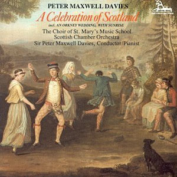
Peter Maxwell Davies
Sir Peter Maxwell Davies (1934- ) est l'auteur d'une oeuvre immense d'où émergent 10 symphonies (n°7, n°9) et davantage de concertos pour solistes différents (dont les 10 Strathclyde Concertos : n°8, pour basson). Je doute que l'atmosphère morbide de ces oeuvres vous séduise. C'est d'autant plus rageant que Maxwell Davies est capable d'une écriture séduisante : outre An Orkney Wedding, With Sunrise, mentionné en introduction, Carolissima devrait plaire à tous mais il y a une explication : c'est une sérénade commandée par le Consul danois à Edimbourg, Jens Hogel, pour surprendre son épouse (Carol, évidemment, par ailleurs pianiste et mécène aussi riche que discrète) qui fêtait ses 50 ans; difficile avec cela de ne pas se montrer aimable !
Harrison Birtwistle (1934- ) est plus difficilement classable tant son style a évolué tout en demeurant complexe. Earth Dances, le Concerto pour violon, Triumph of Time ne sont nullement hors d'atteinte mais je sens bien que j'aurai quelque peine à vous convaincre; ne vous découragez pas. Je suis par contre totalement hermétique au chant (?) opératique qui baigne Punch and Judy, une oeuvre qui renoue avec la pire tradition vocale qu'on a connue au 20ème siècle.
La musique de Brian Ferneyhough (1943- ) a dès ses débuts été considérée comme injouable de par sa difficulté. Ce n'est plus vraiment le cas aujourd'hui (elle est effectivement jouée), par contre, elle demeure largement inaudible. La réputation du musicien, en hauts lieux, devrait m'empêcher d'en parler avec légèreté mais j'estime, quant à moi, que je perdrais toute crédibilité en vous recommandant - je prends au hasard - son Quatuor n°6, qui véhicule avec 60 années de retard tous les poncifs en usage dans les années 1950.
Quelques autres compositeurs ont cherché un équilibre entre accessibilité et complexité. L'avant-gardiste Cornelius Cardew (1936- ) fut versatile, c'est le moins qu'on puisse dire : quel rapport existe-t-il entre Octet '61' et ces Thälmann Variations (Part 1, Part 2) ? Jonathan Harvey (1939-2012) (Mortuos plango, vivos voco, Advaya) s'est pas mal débrouillé dans le traitement électronique de ses oeuvres, je le recommande. Robin Holloway (1943- ) (Concerto n°5 pour orchestre en 4:40), Michael Finnissy (1946- ) (Quatuor n°2), Michael Berkeley (1948- ) (Uprising), John Casken (1949- ) (Concerto pour violon), James Dillon (1950- ) (Physis II), Gerald Barry (1952- ) (Quatuor à clavier n°1, ne pas manquer !), Robert Saxton (1953- ) (Ring of Eternity) et Judith Weir (1954- ) (Airs from Another Planet) proposent chacun leur vision de la modernité. A ce jeu, George Benjamin (1960- ) a longtemps passé pour le premier de la classe (de composition). Comme beaucoup de ses collègues, il a démarré de façon hermétique puis il s'est civilisé. Commencez donc par ses oeuvres récentes sinon vous risquez de vous décourager (Three Inventions, A Mind of Winter).
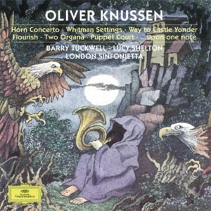
Oliver Knussen
Pourtant, à mon humble avis, le premier de la classe se nommerait plutôt Oliver Knussen (1952- ), un musicien qui écrit trop peu mais c'est précisément la rareté de ses compositions qui en font le prix (Symphonie n°2 , Prayer Bell Sketch, Songs without Voices, Variations, opus 26, et enfin, "Two Organa" ), flamboyant !
La tradition religieuse est demeurée vivante en Angleterre sous les plumes de Geoffrey Burgon (1941-2010) (Requiem), John Rutter (1945- ) (Requiem) et Judith Bingham (1952- ) (Wells Service). James MacMillan (1959- ) n'a pas cessé de composer depuis que je lui ai consacré un portrait et beaucoup d'oeuvres récentes sont sacrées, telle cette remarquable Passion selon St Luc .
Le gène "rétromantique" continue de s'exprimer chez un grand nombre de compositeurs que vous pourriez apprécier : Kenneth Leighton (1929-1988) (Concerto pour cordes), Alun Hoddinott (1929-2008) (Symphonie n°4), Nicholas Maw (1935-2009) (Concerto pour violon), Richard Rodney Bennett (1936-2012) (Symphonie n°1) ou John McCabe (1939-2015 ) (Concerto n°2 pour violon).
Les frères Matthews, David (1943- ) (Symphonie n°2) et Colin (1946- ) (Four Sonata pour orchestre, excellent !) sont trop essentiels à la musique d'aujourd'hui pour que je puisse me permettre de les expédier en une ligne. Ils méritent une étude comparative détaillée que je vous promets pour un de ces mois.
Le courant de la nouvelle simplicité est parfaitement illustré par deux compositeurs décrits par ailleurs, Gavin Bryars (1943- ) et John Tavener (1944- 2013). Dans sa forme la plus extrême, ce courant a tenté de tirer parti de l'essor d'une nouvelle musique populaire que l'on qualifie de "pop music" afin qu'il soit bien clair qu'elle se démarque des ballades celtes d'autrefois. Il a donné lieu à des hybrides où le souci d'efficacité prime celui de la construction savante. Cette remarque s'applique particulièrement à Michael Nyman (1944- ) dont la présence pourrait étonner dans une chronique qui se veut sérieuse. Mais, au mieux de sa création, souvent lors d'une commande qu'il tenait à honorer avec soin, le musicien a fait preuve d'un réel talent : MGV (Musique à grande Vitesse, Part 1 & 2, Part 3 & 4, Part 5), une commande de la ville de Lille pour l'inauguration de "sa" ligne TGV (1993), est une réussite incontestable, hélas jamais renouvelée. Out of the Ruins et Memorial (commémorant les victimes du stade du Heysel à Bruxelles, en 1985) témoignent cependant d'une exploitation habile du minimalisme. Nyman s'est un temps essayé au quatuor à cordes avec une candeur qui ne manquait pas de charme (Quatuors n°2, n°5) et, plus récemment, il s'est tourné vers la symphonie mais, cette fois, le résultat n'est pas vraiment à la hauteur des espérances.
Les compositeurs plus jeunes (en musique, tout est relatif !) démontrent la vitalité de la musique britannique : Steve Martland (1959-2013), Jonathan Dove (1959- ) (The Adventures Of Pinocchio, The Flight, Missa brevis), peut-être le plus américain de tous (en musique, au moins, ce peut être un compliment !), Mark-Anthony Turnage (1960- ) (Frieze), Graham Fitkin (1963- ) (Hook), Julian Anderson (1967- ) (Khorovod), Thomas Adès (1971- ) (Four Quarters, à écouter absolument, In seven Days, Concerto pour violon), Joby Talbot (1971- ) (Tide Harmonic) et sans aucun doute beaucoup de nettement plus jeunes dont la renommée confirmée n'a pas encore atteint nos frontières.
La vie musicale anglaise
Si les compositeurs anglais ont mis du temps à s'imposer, il n'en fut pas de même des interprètes. Londres a été un centre musical important dès l'époque baroque (Rappelez-vous le règne de Charles II) et le fait qu'on y invitait beaucoup de musiciens étrangers n'y fut pas pour rien. Voici quelques caractéristiques de la vie musicale britannique :
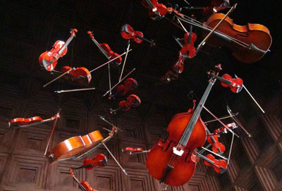
Composition pour cordes
(Riu Palace Tikida, Agadir)
Les anglais aiment la musique pour cordes comme ils aiment l'agneau à la menthe ou la confiture au gingembre. Vaughan-Williams, Elgar, Bridge, Warlock, Delius, Rutter, ..., ont écrit des Suites faciles et plaisantes. Les septuagénaires amateurs de "musique classique" se souviennent de l'orchestre de St Martin in the Fields (fondé en 1959), omniprésent dans ce répertoire. Il existe toujours sur la scène londonienne, seuls les musiciens et leur chef ont changé !
On le rappelait en introduction, le chant d'Outre-Manche a bénéficié de quelques grandes voix solistes, d'Alfred Deller à Felicity Lott. Le chant choral y est même une institution, pas nécessairement applaudie avec le même enthousiasme sur le continent. Les chapelles anglaises (Oxford, Cambridge, ...) ont de tous temps hébergé de (jeunes) garçons à la voix angélique pour les uns, détimbrée pour les autres. Certains ensembles adultes vont même jusqu'à vouloir les imiter (Tallis Scholars, The Sixteens). Les apprécier est une affaire de goût que personnellement je ne partage guère, préférant le chant davantage sexué des ensembles Pro Cantionae Antiqua, Hilliard ou Taverner Consort.
Deux formations baroqueuses ont longtemps dominé leurs consoeurs : The English Concert (1972) de Trevor Pinnock et l'Academy of Ancient Music (1973) de Christopher Hogwood. Un chef de génie, John Elliott Gardiner (1943- ), possède le pouvoir de transformer en chef-d'oeuvre chaque partition qu'il touche, qu'elle appartienne au répertoire baroque (ses débuts) ou (pré)romantique (actuellement).
Toujours dans le domaine de la musique ancienne, on ne pleurera jamais assez la disparition prématurée de David Munrow (1942-1976) que plus grand monde n'évoque aujourd'hui. Au service des répertoires médiévaux (Magister Perotin : Viderunt Omnes) et renaissants (Danseries) il a enregistré, avant tout le monde, quelques albums cultes hélas pas toujours faciles à trouver. Plus légèrement, on sourira aux prestations impeccables des légendaires King's Singers, plus tout à fait les mêmes qu'à leurs débuts (en 1968 !) mais toujours aussi spirituels (ici en répétition avec l'ensemble Arpeggiata).
L'école anglaise de piano est l'une des meilleures qui soient. Elle ne forme pas des bêtes de scène comme l'école russe mais des musiciens d'une élégance rare dans tout ce qu'ils entreprennent. J'ai découvert il y a bien longtemps le Concerto L'Empereur sous les doigts de Clifford Curzon (1907-1982) et je ne m'en suis jamais vraiment remis. Les labels Chandos et Hyperion font actuellement appel à l'excellent Stephen Hough (1961- ) pour étoffer leur catalogue de la meilleure façon (A son propos, saviez-vous qu'il compose ? Réponses : Broken branches, Sonate n°2).
On peut dire à peu près la même chose des orchestres insulaires. Aux côtés du LSO (London Symphony Orchestra), on dénombre une demi douzaine d'orchestres décentralisés dont pas moins de 3 orchestres de la BBC, tous excellents (Whales, Scotland et naturellement London).
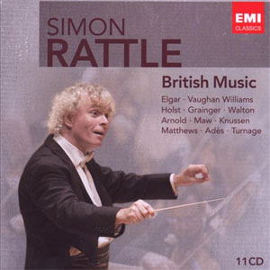
Simon Rattle
Nous voici arrrivés au terme de ce long périple en Grande-Bretagne. Au risque de passer pour un dangereux unitariste, je n'ai pas souvent mentionné l'origine précise de chaque musicien évoqué, anglais, gallois, écossais ou irlandais. Paresse ou négligence, qu'ils me pardonnent si cela faisait une différence !
Si vous souhaitez ramener un souvenir de ce voyage, j'ai ce qu'il vous faut ! Voici un album-souvenir qui résume les 150 années les plus glorieuses qu'a connues ce pays. D'accord il est un peu "bateau" comme tout ce qu'on ramène de vacances mais convenez que 30 euros pour 11 CD vous ne serez pas ruinés et s'il vous encombre, je vous aurai au moins trouvé un cadeau idéal pour les fêtes.
Les oeuvres, pas forcément très originales mais variées, sont dirigées par Simon Rattle (1955- ), l'un des meilleurs chefs actuels. Parti à Berlin, en 2002, pour diriger la célèbre Philharmonie, il est revenu au pays cette année pour prendre la direction permanente du London Symphony Orchestra.
L'autre chef emblématique fut à coup sûr Richard Hickox (1948-2008), honoré ici même pour son travail inlassable et inégalé au service de la musique anglaise.
Une chose me frappe, rétrospectivement : cette chronique, consacrée au Royaume-Uni, est plus longue que celle consacrée à l'Allemagne, ce qui est objectivement anormal. Mais ce pays a tant fait pour la musique, surtout au 20ème siècle et encore actuellement, que cela valait bien un geste de reconnaissance. Plus éclectique et flamboyante que n'importe quelle autre capitale, Londres n'est pas seulement la City de la finance, elle est aussi La Cité de la Musique.